I'm しか. A student making things with AI.

shika (4k29)
Student · vibe coder
SHIKA
Human × AI.
device / starting…
Build a profile for me.
Tell me more.
Explored interfaces, devices, human × AI└ HCI, small language models, context-aware experiences
Making photographs, videos└ prompt → preview → “a little more like this”
Prefers good defaults, fewer steps, thoughtful design
Edited the spacing. again. +taste −clutter
Still iterating on pretty much everything(esc to overthink)
02 / SELECTED WORK
Tecirc
Message not sent. Usage limit reached.